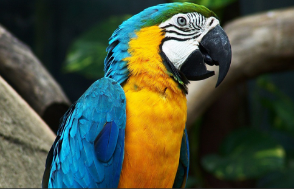
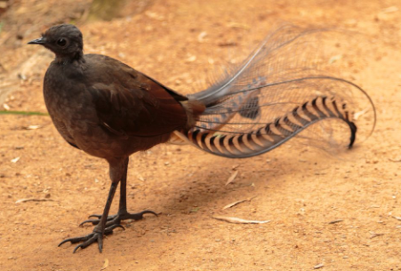
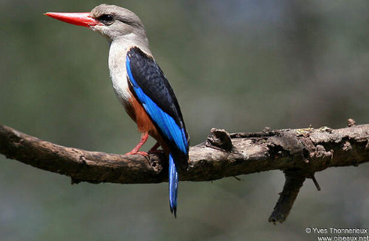
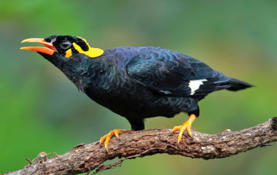

On pense tout de suite au perroquet, mais d'autres oiseaux ont des talents d'imitateur au poussent des cris étonnants!
 Le perroquet doméstiqué à gauche est capable d'adapterles mots qu'il connait aux situaions. Et l'oiseau-lyre reproduit les chants des autres oiseaux. C'est un très bon imitaireur.
 Le martin-chasseur à gauche, a un cri qui ressemble au rire humain. On l'appelle l'oiseau rieur. Et le mainate à droite, est encore plus doué que le perroquet pour imiter l'homme.